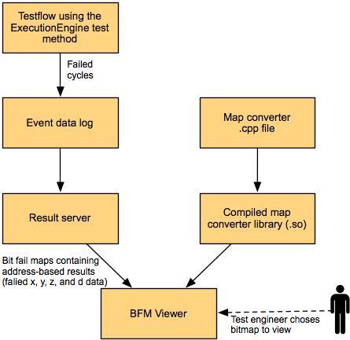

Operating principles of the BFM Viewer
The Bit Fail Map Viewer (BFM Viewer) graphically displays bit fail maps that have been created from the tests' data logs by the Result Server.
This graphic shows the basic steps of a workflow:

This is how the BFM Viewer is used:
- A test is performed with the ExecutionEngine test method.
- The resulting event data log information is converted by the Result Server to bit fail maps.
- A map converter library is specified in the BFM Viewer that maps the bit fail maps into a two-dimensional structure suitable for on-screen display.
- The user selects one or more of these bit fail maps to be displayed and analyzed in the BFM Viewer.
- The selected bit fail maps and the underlying data can be displayed in various ways.
Functional changes
- Introduced before SmarTest 6.3.2
- MTP 3.0.1: The ExecutionEngine test method replaces the Memtest test methods